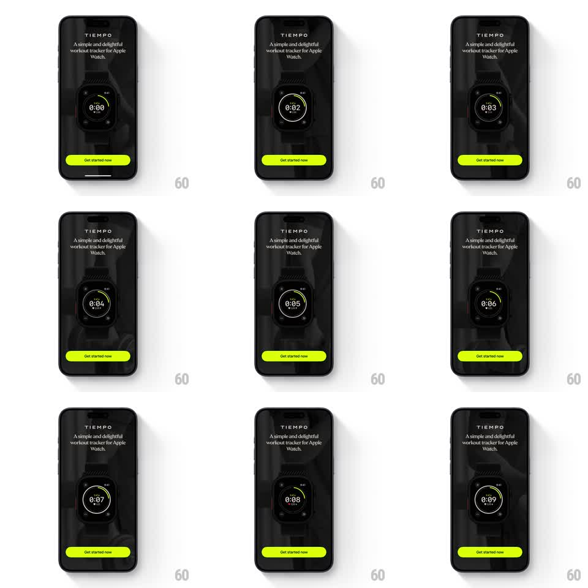

Media
Frame-by-frame

Rebuild this animation 1:1: Tiempo's promo hero - an Apple Watch mockup auto-plays a live workout: the timer counts up, the heart rate pulses, and the progress ring fills around the face.

Rebuild this animation 1:1: Tiempo's promo hero - an Apple Watch mockup auto-plays a live workout: the timer counts up, the heart rate pulses, and the progress ring fills around the face. ## Integration Integration: stack-agnostic spec - springs given as stiffness/damping, timed motions as duration + curve; map every value to your framework and animation library of choice. ## Scene Tiempo landing, near-black with a faint dark texture: "TIEMPO" wordmark, "A simple and delightful workout tracker for Apple Watch.", a large Apple Watch mockup center showing the workout face (elapsed timer 0:00, heart rate with heart glyph, corner complications, a lime-yellow activity ring), and a lime "Get started now" button below. ## Motion spec Pattern: auto-playing watch mockup with a live timer, pulsing heart rate, and a filling ring. - The page loads with the watch fading up (24px rise, 500ms), wordmark and tagline 150ms earlier, the button 150ms after. - The workout auto-starts: the elapsed timer counts up in real time (0:00, 0:01, ... digits roll 100ms per second change, monospaced so nothing shifts). - The lime progress ring sweeps clockwise around the watch face, tracking elapsed time (linear, completing one lap per minute). - The heart rate pulses: the heart glyph beats (scale 1 -> 1.25 -> 1, 400ms per beat at ~105bpm pacing) and the bpm number drifts realistically (103 -> 105 -> 107, changing every 2-3s with a 150ms crossfade). - The watch hardware has a slow ambient glint: a light sweep crossing the case every ~6s (400ms). - The CTA button idles with a soft glow pulse (shadow opacity 0.5 -> 0.8 -> 0.5, 2.5s). ## Calibration - The timer is monospaced and right-stable - the colon never moves. - Everything inside the watch face is live; everything outside it is still. ## Reduced motion Static watch face showing 0:00 and a resting heart rate; no ring sweep or beats. ## Don't miss - The ring's color is Tiempo's lime, matching the CTA button exactly. - Corner complications (time, icons) stay static - only the timer, bpm, heart, and ring move.